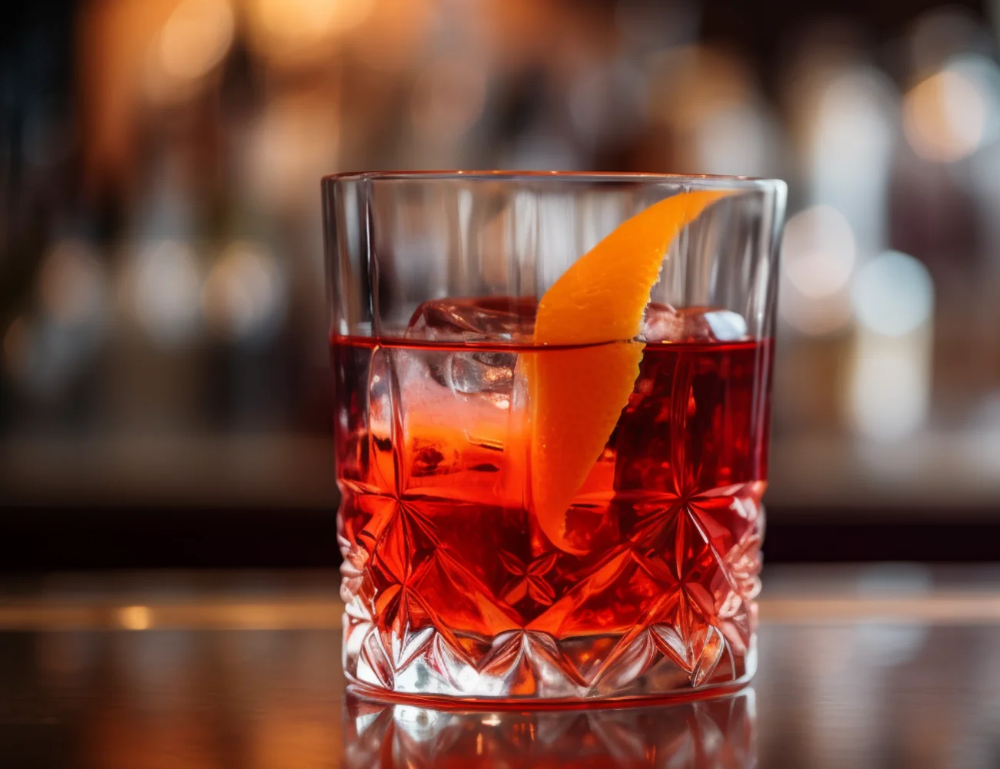

Negroni
Ingredientes:
- 1 onza de ginebra.
- 1 onza de Campari.
- 1 onza de vermut dulce.
- Hielo.
- Rodajas de naranja.
Categoría: Fuerte
Aperol Spritz

Ingredientes:
- 40 mililitros de Prosecco.
- 40 mililitros de Aperol.
- Un chorrito de Club soda.
- Hielos.
Categoría: Suave
The Hugo

Ingredientes:
- 80 mililitros de Prosecco o vino blanco.
- 50 mililitros de licor de flor de saúco.
- 25 mililitros de jarabe de flor de saúco.
- 3 hojas de menta.
- Una rodaja de limón.
- Agua mineral.
Categoría: Suave